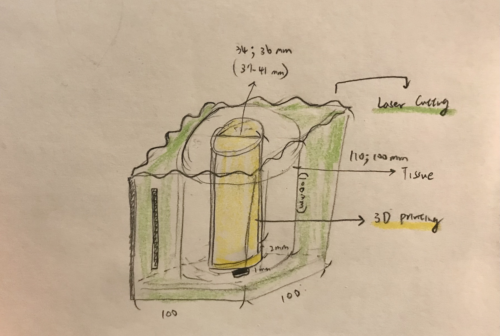

Concept
When I was browsing the website to find some ideas for my final project, I saw a napkin holder which I think looks pretty useful.

I don't have napkins, but I place a roll of tissue on my desk, as you could see in the image below. This is not ideal as my desk looks messy and the tissue might collect dust or fall down to the floor.
So I want to create somehting that could not only keep my tissue clean and prevent it from falling, but could also save some space. I think the hollow cylinder in the middle of the tissue role is actually pretty useful; I could potentially place the face lotion that I constantly use throughout the day in it, or put some of the pen that I use most frequently in there. I imagine it could look something like the image below.
Here are some of the tools that I'm planning to use to finish this project:
First, I would use Rhino to create the shapes of different elements for this organizer. Second, the tissue is the physical constraint that I'll design around. Third, I'll use laser cutting to create 5 pieces of squares using Basewood sheet (approximately $20) and put them together into a box and place the tissue inside it. I'll cut open a split on one side of the box so I'll be able to pull the tissue out through it. Lastly, I'll use the 3D printer to create a hollow cylinder and place it in the middle of the tissue roll to hold the pen. I'll use the glue to stck it to the bottom of the wooden box.
Brainstorming
If possible, I want to engrave some patterns or shpaes on the box. Some ideas that I have include different types of wavy patterns or some floral shapes. Below are some inspirations that I might refer to.
Timeline
For this week, since the Mill is closed, I'll create all the elements that I need using Rhino and 3D print the cylinder that I need. For next week, I'll laser cut the wooden box and put everything together. I feel like I aways need double or triple the time than my friends do to create something that's super basic. So I'll dedicate all of my time to this project and get it finished. If things went worse than I expected, I won't engrave the Basewood sheet.
-----
No files to share for now
-----
Biggest thanks to Xenia and the 533 Support Group for all the help!